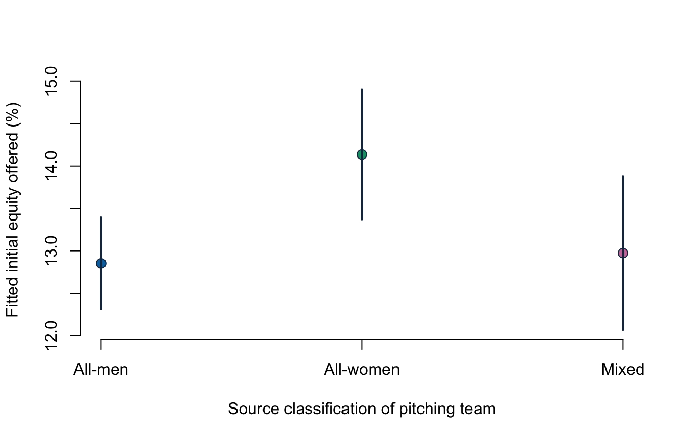

Lecture 5: Dummy predictors and joint usefulness
- encode a two-level or multi-level categorical predictor with dummy variables;
- interpret dummy coefficients relative to a named reference group;
- avoid the dummy-variable trap;
- use an overall or partial F-test to assess joint usefulness;
- separate adjusted associations from causal or essentialist claims.
Before class
Video preparation
Watch Stanford Statistical Learning
3.5
Extensions of the Linear Model. Focus on qualitative predictors and how a
reference category determines coefficient meaning.
Review Mathematics Refresher: indicators and reference categories if needed.
With three categories—all_men, all_women, and mixed—how many dummy
variables are needed in a model that includes an intercept?
Check your preparation
Two. One category is the reference group; the intercept represents it, and the two dummy coefficients compare the remaining categories with it.
In class
Stanford explanation (review): 3.5 Extensions of the Linear Model.
A two-level indicator
For a binary predictor \(D_i\in\{0,1\}\),
\[ E[Y_i\mid D_i]=\beta_0+\beta_1D_i. \]
Then
\[ E[Y_i\mid D_i=0]=\beta_0, \qquad E[Y_i\mid D_i=1]=\beta_0+\beta_1. \]
Thus \(\beta_1\) is the expected difference between the 1 group and the 0 reference group.
More than two categories
With \(G\) categories and an intercept, use \(G-1\) dummies. Including all \(G\) dummies plus an intercept creates exact linear dependence because the dummies sum to 1. This is the dummy-variable trap.
R creates the dummies automatically when a predictor is a factor. Set the reference category deliberately and verify it.
## [1] "all_men" "all_women" "mixed"## all_women mixed
## all_men 0 0
## all_women 1 0
## mixed 0 1The source categories describe the presenting team as all men, all women, or mixed. They do not measure the share of women, gender identity beyond the source categories, or the composition of the full venture.
Fit an adjusted category comparison
gender_model <- lm(
equity_offered_pct ~ season + ask_100k + gender,
data = known_gender
)
summary(gender_model)##
## Call:
## lm(formula = equity_offered_pct ~ season + ask_100k + gender,
## data = known_gender)
##
## Residuals:
## Min 1Q Median 3Q Max
## -16.118 -4.778 -1.100 3.220 82.590
##
## Coefficients:
## Estimate Std. Error t value Pr(>|t|)
## (Intercept) 20.83883 0.50649 41.143 < 2e-16 ***
## season -0.82389 0.04780 -17.238 < 2e-16 ***
## ask_100k -0.26613 0.05822 -4.571 5.28e-06 ***
## genderall_women 1.28352 0.48102 2.668 0.00771 **
## gendermixed 0.12093 0.54115 0.223 0.82320
## ---
## Signif. codes: 0 '***' 0.001 '**' 0.01 '*' 0.05 '.' 0.1 ' ' 1
##
## Residual standard error: 7.612 on 1429 degrees of freedom
## Multiple R-squared: 0.1913, Adjusted R-squared: 0.189
## F-statistic: 84.49 on 4 and 1429 DF, p-value: < 2.2e-16Holding season and requested amount fixed:
- all-women teams are fitted to offer about 1.28 percentage points more equity initially than all-men teams;
- mixed teams are fitted to differ from all-men teams by about 0.12 percentage points.
The all-women coefficient has a classical p-value of about 0.008; the mixed coefficient has a p-value of about 0.823. These are two reference-group comparisons, not a claim that gender causes the offers.
A complete dummy-coefficient interpretation must name both categories, give the outcome unit, state the predictors held fixed, and preserve the sample and measurement boundary. For example: “Among pitches with a recorded source classification, all-women presenting teams are fitted to offer 1.28 equity percentage points more than all-men presenting teams at the same season and requested amount.”
Changing the reference group changes coefficient labels, not fitted values or overall model fit.
known_gender$gender_women_ref <- relevel(known_gender$gender,
ref = "all_women")
coef(lm(equity_offered_pct ~ season + ask_100k + gender_women_ref,
data = known_gender))## (Intercept) season ask_100k
## 22.1223564 -0.8238940 -0.2661283
## gender_women_refall_men gender_women_refmixed
## -1.2835231 -1.1625889The overall F-test
For \(k\) slopes, the overall test is
\[ H_0:\beta_1=\cdots=\beta_k=0 \]
against at least one non-zero slope. In R, it appears in summary(model).
For gender_model, the very small overall p-value says the full set of season,
request, and category predictors is jointly useful relative to an
intercept-only model.
A partial F-test for a group of terms
An individual t-test asks whether one coefficient is zero. A partial F-test asks whether several coefficients are jointly zero after retaining other predictors.
To test whether the two gender dummies add information beyond season and request:
\[ H_0:\beta_{all\_women}=\beta_{mixed}=0. \]
## Analysis of Variance Table
##
## Model 1: equity_offered_pct ~ season + ask_100k
## Model 2: equity_offered_pct ~ season + ask_100k + gender
## Res.Df RSS Df Sum of Sq F Pr(>F)
## 1 1431 83228
## 2 1429 82792 2 436.25 3.7649 0.0234 *
## ---
## Signif. codes: 0 '***' 0.001 '**' 0.01 '*' 0.05 '.' 0.1 ' ' 1The partial F-test has p-value about 0.023. At 5%, the two source-category terms are jointly useful in this specification. This statement is not equivalent to saying every dummy coefficient is individually significant.
The reduced model must be nested inside the complete model: it is obtained by setting the tested coefficients to zero while keeping the same analysis rows.
Visualise adjusted comparisons

The horizontal axis names the source categories and the vertical axis gives fitted initial equity in percent. The points compare fitted means at the same average season and request; the vertical lines are 95% confidence intervals. They express model-based uncertainty, not causal effects or uncertainty about how the categories were recorded.
After class
Retrieval
- Why are only \(G-1\) dummies used with an intercept?
- What does a dummy coefficient compare?
- What changes when the reference group changes?
- What does a partial F-test evaluate?
- Why can a joint F-test reject when one individual t-test does not?
Check your answers
- All \(G\) dummies sum to the intercept, creating exact collinearity.
- A category with the named reference category, holding other included predictors fixed.
- Coefficient representation changes; fitted values and overall fit do not.
- Whether a specified group of coefficients is jointly zero in nested models.
- The F-test evaluates the terms together; individual tests ask narrower questions and may have larger separate uncertainty.
Practice
- Relevel
gendersomixedis the reference group and interpret both dummy coefficients. Save the relevelled model asrelevelled_model. - Verify that fitted values are unchanged after releveling by comparing it
with
gender_model. - State the hypotheses for the partial F-test of both gender dummies.
- Explain why the seven
unknownrecords were excluded rather than treated as evidence of a substantive fourth group. - Write a 120-word interpretation of the full model that includes the source measurement boundary and causal limit.
- Explain why “the all-women coefficient is 1.28%” is ambiguous, then rewrite it precisely.
Check your answers
Use:
mixed_reference <- relevel(known_gender$gender, ref = "mixed") relevelled_model <- lm( equity_offered_pct ~ season + ask_100k + mixed_reference, data = known_gender ) coef(relevelled_model)At fixed season and request, the all-men coefficient is about \(-0.121\) percentage points and the all-women coefficient about \(1.163\) percentage points, each relative to mixed teams.
all.equal(fitted(gender_model), fitted(relevelled_model))returnsTRUEup to numerical tolerance.\(H_0:\beta_{all\_women}=\beta_{mixed}=0\) against at least one non-zero coefficient, with all-men as the current reference.
unknownrecords lack a known classification; absence of recorded information is not a meaningful team-composition category.A complete answer reports estimates and units, reference group, held-fixed variables, uncertainty, selected sample, broad source coding, and the associational—not causal—scope.
It confuses percent with percentage points and omits the comparison and conditioning. A precise version is: “At the same season and requested amount, all-women presenting teams are fitted to offer 1.28 equity percentage points more initially than all-men presenting teams.”
Continue to Lecture 6: Interactions and polynomial terms.
For a more formal treatment, see James et al., An Introduction to Statistical Learning, 2nd ed., Sections 3.2.2 and 3.3.1, and Nieuwenhuis, Statistical Methods for Business and Economics, Chapters 20–21.